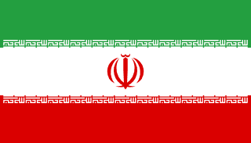

Arab
Arab
العربية
Országok:
• Szaúd-Arábia, UAE, Kuvait, Katar• Egyiptom, Líbia, Tunézia, Algéria, Marokkó
• Szudán, Szomália, Dzsibuti
• Irak, Szíria, Libanon, Jordánia
Jellemző szavak: في من على إلى العربية
 Perzsa (Farsi)
فارسی
Országok:
• Irán• Afganisztán (Dari változat)
• Tádzsikisztán (cirill betűkkel)
Jellemző betűk: پ چ ژ گ (nincs arabban)
 Pastu
Pastu
پښتو
Országok:
• Afganisztán• Pakisztán (részben)
Jellemző betűk: ښ څ ډ ړ ږ ټ (pastu specifikus)
 Urdu
Urdu
اردو
Országok:
• Pakisztán• India (részben)
Jellemző: Hindi szavak arab betűkkel
 Török (régi)
Török (régi)
عثمانلی
Megjegyzés:
• Ma már latin betűket használnak• Régi feliratok, mecset nevek
• Történelmi szövegek
Tipp: Csak régi épületeken látható
 Jawi (Malay)
Jawi (Malay)
جاوي
Országok:
• Malajzia (részben)• Brunei
• Indonézia (ritkán)
Tipp: Malay nyelv arab betűkkel
🗺️ Arab betűs nyelvek térképe
Közel-Kelet és Észak-Afrika:
Arab: Szaúd-Arábia, UAE, Kuvait, Katar, Bahrein, Omán, Jemen, Irak, Szíria, Libanon, Jordánia, Egyiptom, Líbia, Tunézia, Algéria, Marokkó, Szudán
Közép-Ázsia és Dél-Ázsia:
Perzsa/Dari: Irán, Afganisztán
Pastu: Afganisztán, Pakisztán
Urdu: Pakisztán, India
Afrika:
Arab: Szomália, Dzsibuti, Csád, Comore-szigetek
Délkelet-Ázsia:
Jawi: Malajzia, Brunei